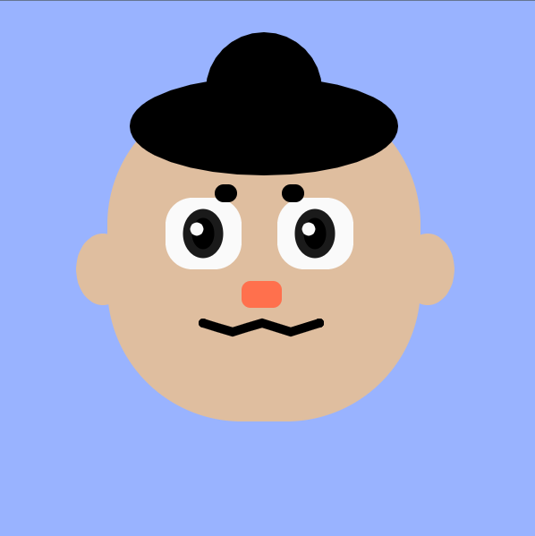

Using coding as art is new to me. We had to use p5js to create artworks and interactive art pieces. The first piece is a self portrait done in p5js using only coding.
The following pieces are interactive artworks. The first is is a DIY Photoshop made in p5js. Using the number row keys (1-0).
You can switch to different brushes: 1. Black / 2.Pastel Rainbow / 3.soft pink / 4. Hot Pink / 5. Skulls / 6. Sparkles / 7. Full Moon / 8. Clouds / 9. Pixel Stars /0. Pixel Moon
This is a game done in p5js. Help Yoshi prepare for his next big adventure! Hover your mouse at the upper corner of the eggs to collect them. Collect 7 and win!